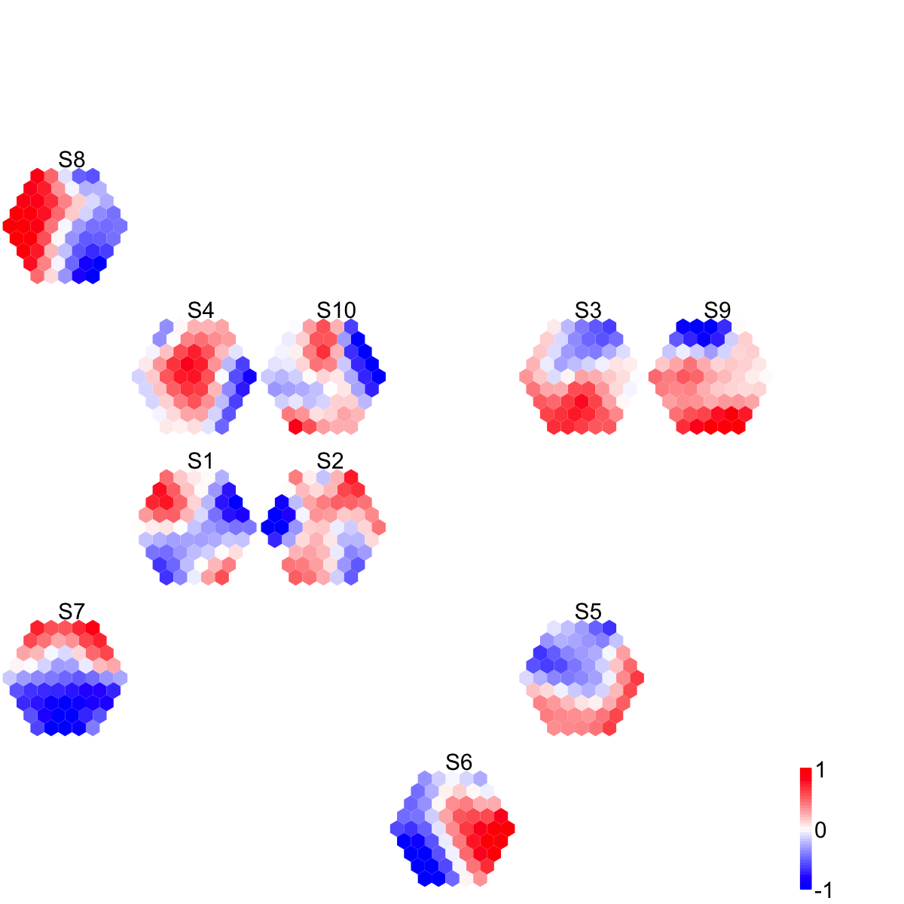

The downloaded source packages are in
‘/private/var/folders/wq/4cmk3m511571471lj67cpmbh0000gn/T/RtmpYs1UaH/downloaded_packages’
Start at 2015-07-21 18:22:51
First, define topology of a map grid (2015-07-21 18:22:51)...
Second, initialise the codebook matrix (61 X 10) using 'linear' initialisation, given a topology and input data (2015-07-21 18:22:51)...
Third, get training at the rough stage (2015-07-21 18:22:51)...
1 out of 7 (2015-07-21 18:22:51)
updated (2015-07-21 18:22:51)
2 out of 7 (2015-07-21 18:22:51)
updated (2015-07-21 18:22:51)
3 out of 7 (2015-07-21 18:22:51)
updated (2015-07-21 18:22:51)
4 out of 7 (2015-07-21 18:22:51)
updated (2015-07-21 18:22:51)
5 out of 7 (2015-07-21 18:22:51)
updated (2015-07-21 18:22:51)
6 out of 7 (2015-07-21 18:22:51)
updated (2015-07-21 18:22:51)
7 out of 7 (2015-07-21 18:22:51)
updated (2015-07-21 18:22:51)
Fourth, get training at the finetune stage (2015-07-21 18:22:51)...
1 out of 25 (2015-07-21 18:22:51)
updated (2015-07-21 18:22:51)
2 out of 25 (2015-07-21 18:22:51)
updated (2015-07-21 18:22:51)
3 out of 25 (2015-07-21 18:22:51)
updated (2015-07-21 18:22:51)
4 out of 25 (2015-07-21 18:22:51)
updated (2015-07-21 18:22:51)
5 out of 25 (2015-07-21 18:22:51)
updated (2015-07-21 18:22:51)
6 out of 25 (2015-07-21 18:22:51)
updated (2015-07-21 18:22:51)
7 out of 25 (2015-07-21 18:22:51)
updated (2015-07-21 18:22:51)
8 out of 25 (2015-07-21 18:22:51)
updated (2015-07-21 18:22:51)
9 out of 25 (2015-07-21 18:22:51)
updated (2015-07-21 18:22:51)
10 out of 25 (2015-07-21 18:22:51)
updated (2015-07-21 18:22:51)
11 out of 25 (2015-07-21 18:22:51)
updated (2015-07-21 18:22:51)
12 out of 25 (2015-07-21 18:22:51)
updated (2015-07-21 18:22:51)
13 out of 25 (2015-07-21 18:22:51)
updated (2015-07-21 18:22:51)
14 out of 25 (2015-07-21 18:22:51)
updated (2015-07-21 18:22:51)
15 out of 25 (2015-07-21 18:22:51)
updated (2015-07-21 18:22:51)
16 out of 25 (2015-07-21 18:22:51)
updated (2015-07-21 18:22:51)
17 out of 25 (2015-07-21 18:22:51)
updated (2015-07-21 18:22:51)
18 out of 25 (2015-07-21 18:22:51)
updated (2015-07-21 18:22:51)
19 out of 25 (2015-07-21 18:22:51)
updated (2015-07-21 18:22:51)
20 out of 25 (2015-07-21 18:22:51)
updated (2015-07-21 18:22:51)
21 out of 25 (2015-07-21 18:22:51)
updated (2015-07-21 18:22:51)
22 out of 25 (2015-07-21 18:22:51)
updated (2015-07-21 18:22:51)
23 out of 25 (2015-07-21 18:22:51)
updated (2015-07-21 18:22:51)
24 out of 25 (2015-07-21 18:22:51)
updated (2015-07-21 18:22:51)
25 out of 25 (2015-07-21 18:22:51)
updated (2015-07-21 18:22:51)
Next, identify the best-matching hexagon/rectangle for the input data (2015-07-21 18:22:51)...
Finally, append the response data (hits and mqe) into the sMap object (2015-07-21 18:22:51)...
Below are the summaries of the training results:
dimension of input data: 100x10
xy-dimension of map grid: xdim=9, ydim=9
grid lattice: hexa
grid shape: suprahex
dimension of grid coord: 61x2
initialisation method: linear
dimension of codebook matrix: 61x10
mean quantization error: 4.74459667018025
Below are the details of trainology:
training algorithm: batch
alpha type: invert
training neighborhood kernel: gaussian
trainlength (x input data length): 7 at rough stage; 25 at finetune stage
radius (at rough stage): from 3 to 1
radius (at finetune stage): from 1 to 1
End at 2015-07-21 18:22:51
Runtime in total is: 0 secs
Start at 2015-07-21 18:22:51
First, define topology of a map grid (2015-07-21 18:22:51)...
Second, initialise the codebook matrix (30 X 61) using 'linear' initialisation, given a topology and input data (2015-07-21 18:22:51)...
Third, get training at the rough stage (2015-07-21 18:22:51)...
1 out of 300 (2015-07-21 18:22:51)
30 out of 300 (2015-07-21 18:22:51)
60 out of 300 (2015-07-21 18:22:51)
90 out of 300 (2015-07-21 18:22:51)
120 out of 300 (2015-07-21 18:22:51)
150 out of 300 (2015-07-21 18:22:51)
180 out of 300 (2015-07-21 18:22:51)
210 out of 300 (2015-07-21 18:22:51)
240 out of 300 (2015-07-21 18:22:51)
270 out of 300 (2015-07-21 18:22:51)
300 out of 300 (2015-07-21 18:22:51)
Fourth, get training at the finetune stage (2015-07-21 18:22:51)...
1 out of 1200 (2015-07-21 18:22:51)
120 out of 1200 (2015-07-21 18:22:51)
240 out of 1200 (2015-07-21 18:22:51)
360 out of 1200 (2015-07-21 18:22:51)
480 out of 1200 (2015-07-21 18:22:51)
600 out of 1200 (2015-07-21 18:22:51)
720 out of 1200 (2015-07-21 18:22:51)
840 out of 1200 (2015-07-21 18:22:51)
960 out of 1200 (2015-07-21 18:22:51)
1080 out of 1200 (2015-07-21 18:22:51)
1200 out of 1200 (2015-07-21 18:22:51)
Next, identify the best-matching hexagon/rectangle for the input data (2015-07-21 18:22:51)...
Finally, append the response data (hits and mqe) into the sMap object (2015-07-21 18:22:51)...
Below are the summaries of the training results:
dimension of input data: 10x61
xy-dimension of map grid: xdim=6, ydim=5
grid lattice: rect
grid shape: sheet
dimension of grid coord: 30x2
initialisation method: linear
dimension of codebook matrix: 30x61
mean quantization error: 4.99079289882425
Below are the details of trainology:
training algorithm: sequential
alpha type: invert
training neighborhood kernel: gaussian
trainlength (x input data length): 30 at rough stage; 120 at finetune stage
radius (at rough stage): from 1 to 1
radius (at finetune stage): from 1 to 1
End at 2015-07-21 18:22:51
Runtime in total is: 0 secs

wh <- dev.size(units="px")
wth <- 1200
hgt <- wth*wh[2]/wh[1]
res <- min(c(wth,hgt))*72/480
png("test.png", width=wth, height=hgt, res=res)
on.exit(dev.off())
print(x)
[[1]]
$src
[1] "
visCompReorder(sMap=sMap, sReorder=sReorder)"
attr(,"class")
[1] "source"
[[2]]
graphics.off()
){kind=link}
){kind=link}